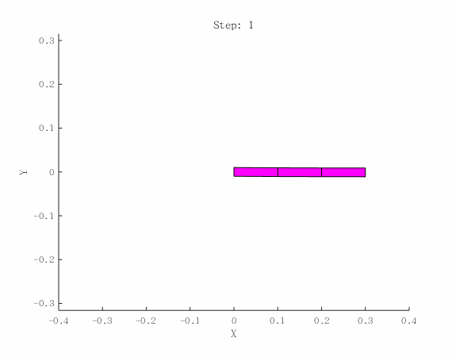

目的
- 以平面RRR三连杆和空间三连杆为例,通过选择两种标架(joint frame以及center of mass frame),实现坐标不变算法对机械臂正逆动力学仿真:包括对inertial matrix, energy的分析;
- 搭建一个基本的creatrobot函数(其中各link为cuboid),采用euler数值积分,将仿真可视化,并与商业软件V-rep对比(对比末端轨迹),在此基础上测试变分积分子.
Coordinate-invariant algorithm
criag的书采用的就是这一方法,李泽湘的新的lecture也加入了这部分内容,坐标系建立在关节处,这一点与Park不同.
center of mass
1 | %主要参数 |
当inertia 矩阵非常小时, 欧拉积分不太合适,容易积累误差.
joint frame
1 | %主要参数 |
结果
Matlab
V-rep
对比.在Matlab中,步长取了50ms,与Vrep中一致,在仿真软件中选了最新的物理引擎.
下一步将继续研究离散的算法.(待续)
附:V-rep基础教程
推荐阅读顺序如下:
- Building a clean model tutorial 从导入模型,建立关节开始大致熟悉一下流程,然后再用问题驱动,阅读User Manual最佳.
- CoppeliaSim User Manual
- 最后,在Youtube有不少优秀的视频,例如从CAD软件中导出Vrep读取的urdf文件并通过child Script控制
这款仿真软件号称是机器人方面的瑞士军刀,在验证开发的算法以及可视化上很给力,并且可以通过API与Matlab通信,目前我只关注到这一层面,算法的研究上我还是用Matlab矩阵运算多一些,慢慢的结合V-rep做一些核对工作(
有时间有必要了解下它内部物理引擎所采取的算法,也先留个位吧-.-)
Bullet
Bullet Physics is a professional open source collision detection, rigid body and soft body dynamics
library. The library is free for commercial use under the ZLib license. 在碰撞检测中用了GJK算法,室友以前还研究过,haha..巧的是,对于逆动力学算法,这个库采用的也是 Recursive Newton-Euler Algorithm (RNEA),而且The computation of the joint space inertia (mass) matrix is using the Composite Rigid Body Algorithm.与我在上述实验中采用的算法一样,因为是开源的(它的积分策略为Symplectic Euler integrator),我们有必要也关注下它的Github 仓库.